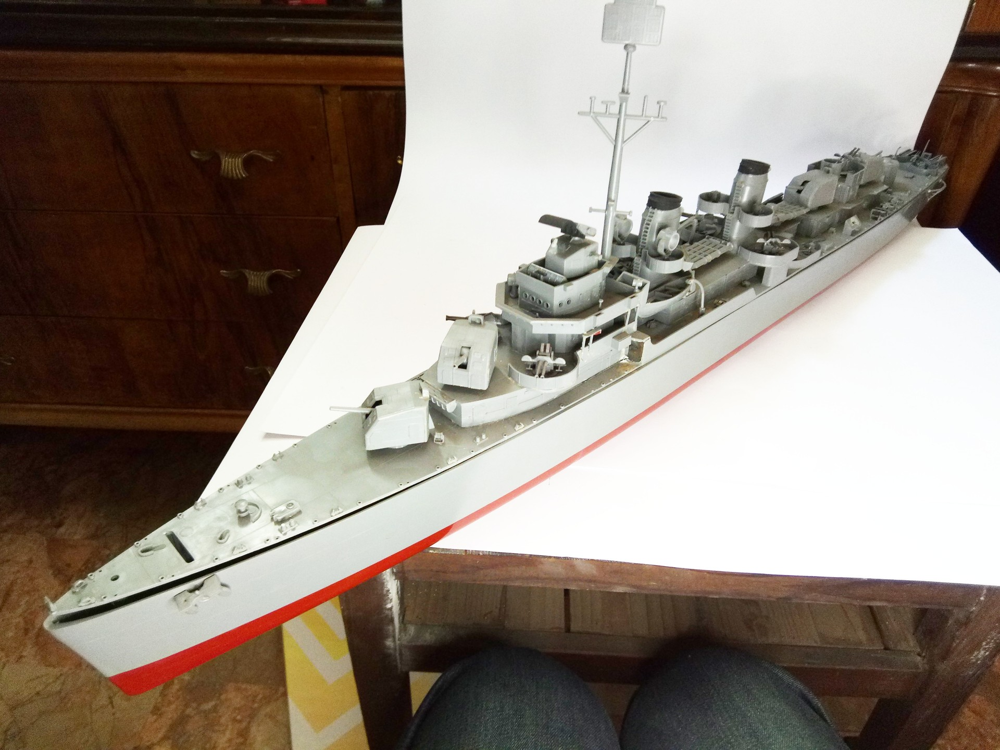

Navi · scale model archive
Blue Devil Destroyer
Blue Devil Destroyer — Kit: Monogram, Scale: 1/125. USS Melvin (DD-680), Fletcher class destroyer US Navy Huge kit, can be used for radio control #1/125…

Photo gallery
English description
USS Melvin (DD-680), Fletcher class destroyer US Navy
Huge kit, can be used for radio control
#1/125 #Lindberg
Descrizione italiana
USS Melvin (DD-680), Fletcher class destroyer US Navy.
Enorme kit, can be used per radio control.